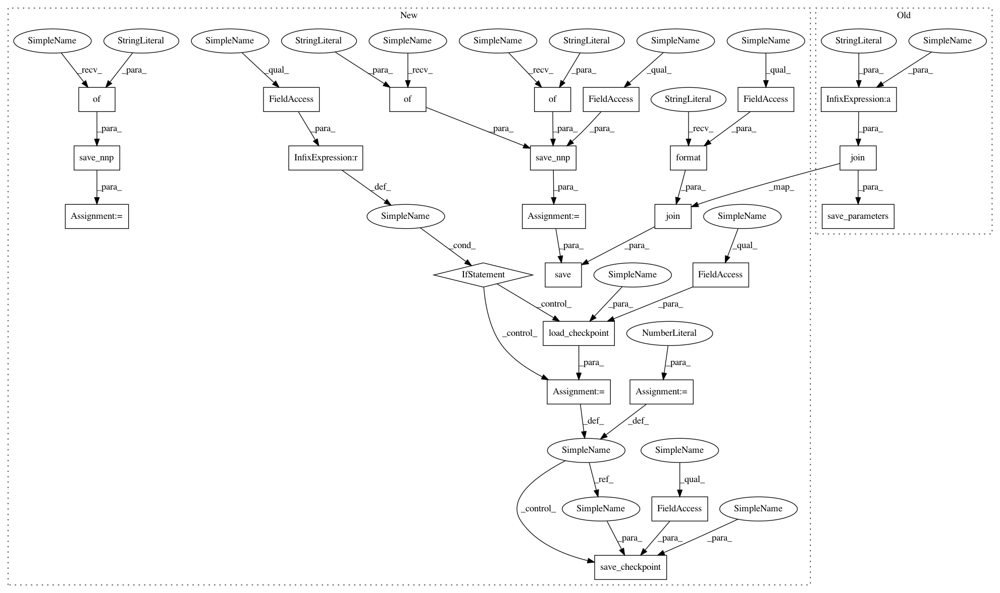

7331bc49dab2d0078054b25500890f8d3eb7733e,mnist-collection/classification_bnn.py,,train,#,223
Before Change
ve += categorical_error(vpred.d, vlabel.d)
monitor_verr.add(i, ve / args.val_iter)
if i % args.model_save_interval == 0:
nn.save_parameters(os.path.join(
args.model_save_path, "params_%06d.h5" % i))
// Training forward
image.d, label.d = data.next()
solver.zero_grad()
loss.forward(clear_no_need_grad=True)
After Change
// Create Solver.
solver = S.Adam(args.learning_rate)
solver.set_parameters(nn.get_parameters())
start_point = 0
if args.checkpoint is not None:
// load weights and solver state info from specified checkpoint file.
start_point = load_checkpoint(args.checkpoint, solver)
// Create monitor.
import nnabla.monitor as M
monitor = M.Monitor(args.monitor_path)
monitor_loss = M.MonitorSeries("Training loss", monitor, interval=10)
monitor_err = M.MonitorSeries("Training error", monitor, interval=10)
monitor_time = M.MonitorTimeElapsed("Training time", monitor, interval=100)
monitor_verr = M.MonitorSeries("Test error", monitor, interval=10)
// save_nnp
contents = save_nnp({"x": vimage}, {"y": vpred}, args.batch_size)
save.save(os.path.join(args.model_save_path,
"{}_result_epoch0.nnp".format(args.net)), contents)
// Training loop.
for i in range(start_point, args.max_iter):
if i % args.val_interval == 0:
// Validation
ve = 0.0
for j in range(args.val_iter):
vimage.d, vlabel.d = vdata.next()
vpred.forward(clear_buffer=True)
ve += categorical_error(vpred.d, vlabel.d)
monitor_verr.add(i, ve / args.val_iter)
if i % args.model_save_interval == 0:
// save checkpoint file
save_checkpoint(args.model_save_path, i, solver)
// Training forward
image.d, label.d = data.next()
solver.zero_grad()
loss.forward(clear_no_need_grad=True)
// Training backward & update
loss.backward(clear_buffer=True)
solver.weight_decay(args.weight_decay)
solver.update()
// Monitor
e = categorical_error(pred.d, label.d)
monitor_loss.add(i, loss.d.copy())
monitor_err.add(i, e)
monitor_time.add(i)
parameter_file = os.path.join(
args.model_save_path, "params_%06d.h5" % args.max_iter)
nn.save_parameters(parameter_file)
// save_nnp_lastepoch
contents = save_nnp({"x": vimage}, {"y": vpred}, args.batch_size)
save.save(os.path.join(args.model_save_path,
"{}_result.nnp".format(args.net)), contents)
if __name__ == "__main__":
train()
In pattern: SUPERPATTERN
Frequency: 3
Non-data size: 24
Instances
Project Name: sony/nnabla-examples
Commit Name: 7331bc49dab2d0078054b25500890f8d3eb7733e
Time: 2020-01-13
Author: Shreenidhi.Ramachnadran@sony.com
File Name: mnist-collection/classification_bnn.py
Class Name:
Method Name: train
Project Name: sony/nnabla-examples
Commit Name: 7331bc49dab2d0078054b25500890f8d3eb7733e
Time: 2020-01-13
Author: Shreenidhi.Ramachnadran@sony.com
File Name: mnist-collection/classification_bnn.py
Class Name:
Method Name: train
Project Name: sony/nnabla-examples
Commit Name: 4d4bc2c1ed869fbbfaf401e02052589ac48f8184
Time: 2020-01-13
Author: Shreenidhi.Ramachandran@sony.com
File Name: cifar10-100-collection/classification.py
Class Name:
Method Name: train
Project Name: sony/nnabla-examples
Commit Name: 7331bc49dab2d0078054b25500890f8d3eb7733e
Time: 2020-01-13
Author: Shreenidhi.Ramachnadran@sony.com
File Name: mnist-collection/classification.py
Class Name:
Method Name: train